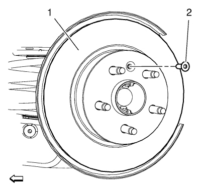

Sustitución del rotor de freno trasero
Herramientas especiales
| • | CH 41013 Juego de repaso del rotor |
| • | CH 42450-A Juego de repaso del cubo de rueda |
Si desea informarse sobre herramientas regionales equivalentes, consultar Herramientas especiales .
Procedimiento de desmontaje
Advertencia: Consulte Advertencia relacionada con el polvo procedente de los frenos en la sección Prólogo.

- Desmonte el soporte de la pinza de freno trasero. Consultar Sustitución del soporte de la pinza del freno trasero
- Marque la posición del rotor del freno con relación a los pernos de la rueda.
- Desmonte el perno del rotor de freno trasero (2).
- Retire el rotor de freno trasero (1) del cubo de la rueda.
Procedimiento de montaje
- Con el juego CH 42450-A, limpie a fondo cualquier óxido o corrosión de la superficie de conexión o de la brida de cubo/eje.
- Utilizando el juego CH 41013, limpie a fondo cualquier óxido o corrosión de la superficie de conexión y de soporte del rotor de freno.
- Revise las superficies de conexión de la brida de cubo/eje y el rotor para garantizar que no queden partículas o restos extraños.
- Monte el rotor de freno (1) en la brida de cubo/eje. Utilice la marca realizada antes del desmontaje para orientar la brida correctamente.
Precaución: Consulte Precaución con las fijaciones en la sección Prólogo.
- Monte el perno del rotor de freno trasero (2) y apriete hasta 7 N·m (62 lib. pulg.).
- Si el rotor de freno se desmonta y se instala como parte de una reparación del sistema de frenos, mida el LRO montado del rotor de freno para garantizar un rendimiento óptimo de los discos de freno. Consultar Medición del alabeo montado del rotor de freno .
- Si la medición del LRO montado del rotor de freno excede la especificación, haga que el LRO se encuentre dentro de las especificaciones. Consultar Corrección del alabeo montado del rotor de freno .
| © Copyright Chevrolet. Reservados todos los derechos |